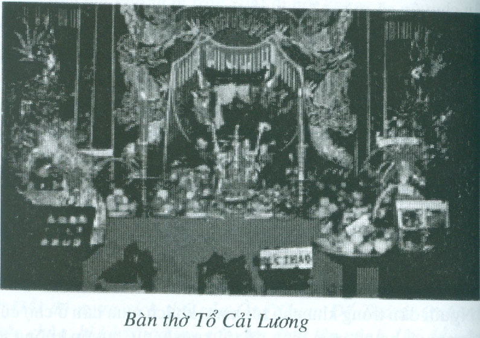

Chúng ta đang ở vào những năm đầu của thế kỷ 21, thời đại của nguyên tử, thời đại của Tin Học, vậy mà tôi nhắc lại những chuyện dị đoan trong giới sân khấu cải lương, chắc có bạn sẽ mỉm cười, cho là người già lẩm cẩm.

.Ở cái xứ Canada tuyết lạnh tình nồng này, cả tháng trời liên tục dò tin trên internet, chưa chắc có ai kiếm ra được một cái tin về ma quái, về những chuyện hồn ma báo oán hay tin trời đánh một đứa con bất hiếu nào đó như mấy chục năm xưa ở quê nhà, nhất là ở đồng quê, người ta thường có những tin tức giựt gân như vậy và người ta tin đó là những chuyện huyền bí có thật, có người còn quả quyết là chính mắt họ đã từng chứng kiến.
Những chuyện tôi sắp kể ra đây, riêng cá nhân tôi và những bạn bè trang lứa với tôi, nhất là những người cùng ở chung một gánh hát, cùng chứng kiến hoặc cùng biết sự việc xảy ra, chúng tôi tin là có thật, nhưng lâu nay tôi không dám nói ra, chỉ vì tôi không biết lý giải theo khoa học, sợ các bạn chê cười là tôi dị đoan, chê tôi là người xưa, cổ lỗ sĩ.
Nhưng giữ mãi trong lòng cái chuyện mà tôi không tự giải thích được thì coi như phải chịu dốt suốt đời, chịu ấm ức mãi, thôi thì cứ nói ra, để giải tỏa ẩn ức của mình vậy.
Chuyện Tổ Nghiệp sân khấu.
Bất cứ nghệ sĩ cải lương, soạn giả hay công nhân sân khấu, bầu bì hay chủ nợ các gánh hát, những ai đã ăn cơm cải lương đều tin tưởng là có Tổ Nghiệp cải lương.
Khi ra ngoại quốc (vượt biên hay đi diện đoàn tụ gia đình, hay đi hát có hợp đồng hoặc hát chui nhân dịp du lịch thăm thân nhân ở ngoại quốc) người nghệ sĩ cũng nhớ lễ cúng giỗ Tổ Nghiệp, đúng ngày theo truyền thống.
Gần đây xem phim vidéo Paris By Night, quay cảnh đằng sau sân khấu, tôi thấy các ca sĩ Tân Nhạc trẻ cũng thắp nhang vái Tổ, chấp tay xá Tổ Nghiệp trước khi bước ra sân khấu, tôi thật sự xúc động trước hình ảnh thân thương đó. Các bạn nghệ sĩ trẻ, có người được sanh ra và lớn lên ở nước ngoài, có bạn khi xuất ngoại thì còn rất nhỏ, vậy mà khi hành nghề ca hát, vẫn giữ tập tục xưa của cha mẹ, thật là đáng mến đáng yêu, đặc biệt đáng ca ngợi các bậc cha mẹ nghệ sĩ đã truyền đạt lại niềm tin Tổ Nghiệp cho con cái nghệ sĩ của mình.
Giai thoại về vị Tổ Sư của nghề hát thì rất nhiều. Ngành Hát Bội thì có giai thoại là hồi xưa, có ba ông hoàng trẻ tuổi trốn theo gánh hát, mải mê xem hát đến ngã bịnh, chết trong gánh hát. Ban hát cho rằng ba ông Hoàng rất linh thiêng nên lập trang thờ và gọi trại đi là ông Làng để tránh phạm thượng. Trong giới hát bội gọi là Tam Vị Thánh Sư.
Đối với ông Làng (Tam Vị Thánh Sư), người hát bội xem là Tổ Nghiệp, rất kính trọng và thân thiết. Hễ diễn tuồng có lớp sanh đẻ, người ta bồng ra sân khấu một ông Tổ để đóng vai hài nhi; xong lớp hát, ông Làng được cung kính đặt lại vào trang thờ. Người diễn viên khi bồng Tổ ra hát hay khi đặt trả lại trang thờ đều không quên chắp tay xá Tổ.
Còn nhiều giai thoại khác về Tổ Nghiệp nghề hát, nhưng trong giới nghệ sĩ Cải Lương, Tổ Nghiệp cải lương là người đầu tiên có công khai sáng nghề nghiệp, truyền nghề cho nhiều người trở thành nghệ nhân, lập thành Ban, thành Đoàn, đặt thành quy củ, nề nếp, kỹ thuật để nghề nghiệp được phát triển thêm lên.
Thờ cúng Tổ Nghiệp sân khấu là một hành động của nghệ sĩ biết ơn công khai sáng, đồng thời cũng biểu lộ lòng tin, khẩn cầu xin Tổ bảo hộ cho nghề nghiệp của mình.
Lý thì là như vậy nhưng lòng tin của nghệ sĩ đối với Tổ Nghiệp như tin một vị Thánh Sư, có phép thần thông, có quyền lực ban phước và trừng phạt những kẻ nào phạm lỗi, dối gian, lừa đảo bạn bè đồng nghiệp.
Vì sự tin tưởng đó, diễn viên nào trước khi bước ra sân khấu hát mà quên xá xá hướng về bàn thờ Tổ thì coi như sẽ quên tuồng, hay hát vô duyên khiến cho khán giả không thích, khán giả đuổi vô.
Có những diễn viên ngoài đời không đẹp, ca hát bình thường, vậy mà khi bước ra sân khấu hát thì trở nên đẹp đẽ muôn phần, làm say mê khán giả. Mỗi một cái liếc mắt, một nụ cười, một tiếng hát cũng đủ làm cho khán giả xiêu hồn lạc phách. Người ta nói cô đào đó hay anh kép đó được “Tổ Đãi”.
Để chứng minh sự thành thật của mình, người ta hay thề:“Nếu tôi gian dối thì cho Tổ vặn họng” hay là “Nếu tôi hại anh hay lấy cắp của anh hì cho Tổ móc nhãn tôi hay Tổ lấy nghề của tôi đi “.
Luôn luôn lời thề đó được người khác tin là người dám thề như vậy, quả là thành thật, là kẻ vô tội, vì người nào đã theo nghề hát rồi thì luôn luôn tin là Tổ Nghiệp linh ứng, không bao giờ dám thề ẩu.
Năm 1948, khi tôi mới bước chân theo ghe hát thì tôi được nghe nhiều anh em trong đoàn Tiếng Chuông kể những mẩu chuyện về sự linh thiêng của Tổ Sân Khấu. Nhập gia tùy tục, tôi cũng tin như anh em đã tin, ngoài ra tôi chưa có một ấn tượng nào rõ ràng về sự linh hiển mà anh em trong đoàn hát thường nhắc.
Cho đến một ngày mà tôi theo đoàn hát Việt Kịch Năm Châu, năm 1952…
Đoàn Việt kịch Năm Châu tập xong tuồng mới: tuồng “ Tây Thi, Gái Nước Việt”, hát khai trương tại rạp Nguyễn Văn Hảo, đông nghẹt khán giả suốt một tuần lễ liên tục.
So với các rạp hát ở Sàigòn và Chợ Lớn, Gia Định lúc bấy giờ, Nguyễn Văn Hảo xứng danh là Hàng Không Mẫu Hạm, riêng ở lầu nhì và từng trệt đã có đến 900 vé thượng hạng, hạng nhứt và hạng nhì. Lầu ba trung bình mỗi đêm bán được từ hai đến ba trăm vé hạng ba.
Mấy tuần lễ sau, cũng hát tuồng Tây Thi Gái Nước Việt ở rạp Đông Vũ Đài trong khu Đại Thế Giới Chợ Lớn, hát ở rạp Thuận Thành Tân Định, rạp Đại Đồng Gia Định, dù hát ở bất cứ rạp hát nào, với vở tuồng Tây Thi Gái Nước Việt, Đoàn Việt Kịch Năm Châu cũng đều đông nghẹt khán giả.
Nhưng khi dọn lên hát ở rạp hát Thủ Dầu Một thì khán giả đến xem đêm đầu chưa tới một phần ba rạp. Đó là hát tuồng Tây Thi Gái Nước Việt, một vở hát đang ăn khách nhứt của Đoàn, được báo chí khen ngợi.
Ban Giám Đốc đoàn, anh Năm Châu, Tám Kiết, Kim Cúc, Kim Lan, chị Hai Nữ họp bàn nên ở tiếp tục hát hay phải dọn đi rạp khác.
Mọi người trong đoàn cũng xôn xao bàn tán. Á Tường, một người Hoa đàn Piano trong dàn nhạc Tây của đoàn nói: “Hà, cái lầy ông Tổ đi theo chơi với mấy con Tầm dồi! “
Tôi biết anh Tường nói “Tầm” tức là mấy con “đầm”, nên ngăn lại: “Đừng nói tầm bậy! Nị coi chừng ông Bầu nghe được, ổng đuổi Nị đó. Đầm ở đâu mà ông Tổ theo chớ?”
“Hà, Cái lầy Nị ngó lên nóc rạp coi, có hai con Tầm tẹp thật là tẹp đó. Ngộ còn muốn có một con làm vợ mà hỏng lược đó!”
Á Tường kéo tôi ra khỏi rạp hát, chỉ lên nóc rạp, hai bên nóc có hai bức tượng bằng ciment, tạc hai cô đầm mặc áo trễ xuống, lòi ngực thật là hấp dẫn. Hình hai bức tượng nữ ôm đàn Luth và đàn Harpe, được ánh sáng trời chiều chiếu vào, lung linh như người sống thật. Hai bức tượng nữ đẹp thiệt, tôi theo đoàn hát tới hát ở rạp Thủ Dầu Một nhiều lần, chưa lần nào chú ý nhìn lên nóc rạp nên không thấy.
Tôi thầm nghĩ: “Á Tường muốn có một cô vợ đầm đẹp như vậy cũng là chuyện phải thôi. Người nắn tượng nhứt định phải chọn một người mẫu thật đẹp…”
Tôi đang lan man nghĩ vơ vẩn thì anh Tám Kiết tới cho biết anh Năm Châu định tối mai sẽ đổi tuồng, nếu mà vắng khách nữa thì “dời bến”, chạy đi chỗ khác.
Đêm nay cũng hát ế. Lãnh lương đờ-mi, mặt mày đào kép méo xẹo, nhăn nhó. Ba bữa lương đờ-mi rồi, vãn hát tối nay, tẩm khậu sẽ phát cho mỗi người một thẻ đường và một tô cháo trắng. Đêm nay mọi người đi ngủ sớm, không ồn ào nhậu nhẹt như mấy tuần hát thành công ở rạp Nguyễn Văn Hảo.
Nhạc sĩ tân và cổ nhạc được chia cho chỗ ngủ dưới khán phòng sát sân khấu, chúng tôi dồn ghế khán giả lại, che chắn thành một ô vuông rộng, bên trong đặt mấy dãy ghế bố.
Tôi ngủ gần Á Tường và anh Hoàng Việt (đờn contre basse).
Ngoài ngọn đèn cóc trên bàn thờ Tổ, trên sân khấu chỉ thắp sáng một bóng đèn 40 watts, trước cửa rạp có một ngọn đèn 60 watts, vì vậy chỗ ngủ của chúng tôi chỉ hơi sáng lờ mờ.
Tôi không ngủ được, Á Tường ngủ ngáy như người ta cưa gỗ…rồ rẹt…rồ rẹt hoài, lâu lâu như nuốt cái gì trong họng, nghe “ót” một tiếng thật lớn.
Hoàng Việt ngồi dậy, mở rương kiếm bông gòn nhét lỗ tai, anh thấy tôi còn trăn trở, bèn rủ tôi ra trước rạp, kiếm rượu đế với khô cá khoai, lai rai cho tới khi nào thật mòn mỏi rồi sẽ ngủ, chớ không tài nào ngủ được với tiếng ngáy của Á Tường.
Chưa kịp đi thì nghe tiếng ú ớ như bị nghẹt họng, tôi thấy Á Tường vùng vẫy, hai tay ôm cổ như muốn gỡ cái gì vô hình đang thắt họng anh ta. Mấy anh tân, cổ nhạc nằm gần đó cũng giựt mình thức dậy. Chúng tôi lay gọi, kêu réo ba hồn bảy vía của Á Tường.
Anh ta mở mắt trừng trừng nhìn mọi người, tỉnh dậy, rồi nhảy xuống ghế bố, miệng lắp bắp:
“Chết ngộ dồi... Chết ngộ dồi... Nó đè ngộ, nó úp...úp cái vú lạnh ngắt của nó vô miệng ngộ, nghẹt thở chịu hông nổi... nó nói ngộ muôn lấy nó làm vợ, nó đòi ngủ với ngộ…”
Hoàng Việt cười:
“Có quỷ mới chịu làm vợ của nị… Làm được bao nhiêu tiền là thua xì phé với số đề hết, có con nào dám tới tò te với nị đâu!”
“Hà! Con quỷ thiệt a! Con quỷ ở trên nóc rạp đó. Hồi chiều ngộ nói chơi, muốn có con vợ đẹp như nó. Tối, nó xuống đè ngộ đó”. A Tường nói và chỉ lên nóc rạp.
Chúng tôi rùng mình, không ai dám nói chơi thêm tiếng nào cả.
Dân chúng quanh rạp Thủ Dầu Một nói là những đêm mưa gió, không trăng sao, họ thấy mấy con đầm bằng ciment trên nóc rạp hiện ra, đờn nghe tăng tăng, có khi nó hát như tiếng hú… Họ đốt nhang, cúng vái hoài nên nó không làm hại ai, chỉ hiện lên đờn ca thôi. Chúng tôi không tin, tuy nhiên không cãi lại vì không muốn mích lòng khán giả. Bây giờ người trong đoàn nói có quỷ từ trên nóc rạp xuống, nửa tin, nửa ngờ, nhưng không ai dám nói là mình không tin.
Tôi xúi Á Tường: “Nị đốt nhang ra lạy mấy bả, xin tha cho cái tội nói bậy hồi chiều. Nếu không, nị đi đâu, mấy bả theo tới đó thì coi như nị tàn cuộc đời”
Hoàng Việt nói: “Nị lạy mấy bả trước rồi mới lạy ông Tổ sau, ông Tổ vặn họng nị đó.”
Á Tường:“Hà! Lạy ai trước cũng vậy mà. Đi… đi lạy ông Tổ, xin mấy cây nhang luôn”.
Á Tường leo lên sân khấu, tôi và Hoàng Việt đi theo. Bàn thờ Tổ đặt sau bức phông trắng, hậu trường sân khấu. Lúc đó đã gần ba giờ khuya. Khi vô tới nơi, tôi thấy anh Năm Châu, anh Tám Kiết và chị Hai Nữ đang thắp nhang vái lạy trước bàn thờ Tổ.
Đây là chuyện bất thường vì không phải đúng ngày giỗ Tổ, đêm khuya không có ai đến cúng vái như vậy.
Anh Tám Kiết thấy chúng tôi tới, hỏi: “Bộ mấy anh cũng thấy hả? ”
Tôi ngạc nhiên: “Anh Tám hỏi chúng tôi thấy cái gì?”
Á Tường mau miệng: “Há! Ngộ thấy mấy bà quỷ đè ngộ”
Anh Năm bực mình: “Á Tường lúc nào cũng nói tầm bậy, tầm bạ. Hỏi nị có thấy ông Tổ hông?”
Á Tường: “Ngộ vô kiếm ông Tổ đây. Hồi chiều ngộ nói chơi, ông Tổ theo mấy cô Tầm trên nóc rạp rồi nên mình hát ế hoài. Hồi nãy, ngộ ngủ, bị mấy bà Tầm đè”.
Anh Năm Châu,Tám Kiết và chị Hai Nữ, ba người trao đổi nhau bằng ánh mắt, khiến cho chúng tôi tin là có chuyện gì đây. Anh Tám Kiết không muốn cho chúng tôi đoán mò lôi thôi nên mau miệng nói: “Tôi với Chị Hai Nữ nằm chiêm bao, thấy giống nhau nên kêu anh Năm dậy nói cho ảnh biết… ”
Chị Hai Nữ:
– Tôi thấy ông Tổ nói: “Tụi bây hát ế vì mấy con quỷ ở trên nóc rạp cản không cho khán giả vô coi hát. Tụi bây dọn đi chỗ khác hát hay là làm cách gì đuổi mấy con quỷ đó đi thì hát mới được”.
Anh Năm Châu:
– Bởi vậy, chúng tôi mới thắp nhang cám ơn Tổ Nghiệp đã báo mộng. Á Tường nói thấy mấy con đầm đó thì đúng là có người khuất mặt khuất mày phá mình rồi. Thôi, anh em đi ngủ đi, rồi mai sẽ tính.
Chúng tôi đốt nhang, xá ba xá, cắm vào lư hương trên bàn Tổ, rồi kéo nhau đi về chỗ của mình.
Đêm đó chúng tôi không ai ngủ được. Gần sáng có tiếng chạy rầm rầm trên sân khấu như tiếng vó ngựa. Giựt mình dậy thì thấy một con nai thiệt lớn đang đi loanh quanh trên sân khấu. Bà đồ hội đuổi, nó nhảy xuống khán phòng, bương chạy xô ngã nhiều hàng ghế trong rạp. Con nai đó là thú nuôi của ông chủ rạp, đêm đêm sau khi vãn hát, nó hay leo lên sân khấu, chạy rầm rầm, không cho ai ngủ yên.
Những ai ở Thủ Dầu Một trong những thập niên 1950 chắc còn nhớ, thuở đó có 3 con nai được nuôi trong thành phố. Một con nai của ông chủ rạp hát là ông Hiếu, nuôi sau rạp. Con nai này quen chỗ đông người, thường đi lảng vảng ngoài đường, vô rạp hát, vãn hát thì leo lên sân khấu. Các nghệ sĩ thường cho nó ăn chuối, có khi chia phần cơm của mình cho nó ăn.
Một con nai nữa là của ông Hương Hào Ty, một nhà giàu có ở Thủ Dầu Một. Ông Hào Ty có một khoảnh vườn rộng, làm thành một cái sở thú nhỏ, trong đó có nuôi con trăn thật lớn, chim trĩ gà rừng, gấu con và một con nai. Các đoàn hát lên hát ở Thủ Dầu Một thường mời ông bà Hào Ty coi hát, dành cho ghế danh dự nên được ông Hào Ty mời lại nhà, đãi đằng đáp lễ và cho vô coi sở thú nhỏ của ông.
Còn một con nai nữa, người nuôi đem bán lại cho ông bà Châu Văn Bê, lúc đó là chủ tiệm Nhựt Hưng, tiệm vàng và tiệm cầm đồ trong thị trấn. Ông Bê muốn nuôi nhưng bận việc kinh doanh, thành ra sau đó trả lại cho người chủ cũ.
Khi chúng tôi tìm đến ông Hiếu, chủ rạp hát để nói chuyện về hai bức tượng đặt trên nóc rạp thì ông Hiếu nói ổng có biết là quỷ nhập vô hai tượng đó. Ông nuôi con nai trong rạp là để trấn áp không cho quỷ vô rạp phá, vì có lý lẽ đó nên mới xin phép ông Tỉnh trưởng cho nuôi một con thú rừng trong thành phố.
Ống nói thêm:
– Đây là đất của Bà Thiên Hậu mà hai con quỷ còn dám ở đó thì biết là nó cũng thần thông quảng đại lắm. Tôi muốn “thỉnh họ” đi chỗ khác nhưng pháp sư ở đây chạy mặt hết trơn. Tôi đành để vậy đó.
Hồi xưa, người mình nhẹ dạ, dễ tin; họ tin là thần tiên, ma quỷ và con người có thể chung sống hòa bình với nhau trong một thành phố nhỏ. Vậy nên ở Thủ Dầu Một, hàng năm đúng vào ngày rằm tháng giêng, hàng trăm ngàn người dân của tỉnh này và các tỉnh lân cận, cả dân của Sàigòn, Chợ Lớn, Gia Định cũng đổ xô về Thủ để làm lễ cúng vía Bà Thiên Hậu.
Lễ diễn ra hai ngày, 14 và rằm 15, mỗi người đi lễ vía Bà cầm một cây nhang dài cả thước, có những cây nhang thật lớn, nhuộm đỏ có in hàng chữ Tàu bằng nhũ vàng.
Phải cần nhang lớn và dài như vậy vì người ta theo kiệu rước Bà, đúng giờ chiều ngày rằm tháng giêng, lễ rước Bà đi dạo phố, khởi hành từ chùa Bà đi quanh chợ Thủ, rồi qua chùa Ông, qua chùa Linh Không Đàm, rồi đi ngang chùa Thuận Thiên, xong quay trở về chùa Bà.
Con đường đi dạo phố của Bà chỉ như vậy, không dài lắm nhưng kiệu rước sắc phong của Bà phải đi từ 4 giờ chiều đến 12 giờ khuya mới trở về đến chùa Bà.
Người dự lễ trùng trùng, điệp điệp...Ta cứ tưởng tượng, hàng bốn, năm trăm ngàn người, mỗi người đốt lên một cây nhang lớn, bốn năm trăm ngàn cây nhang đốt một lượt, khói hương có thể kết thành một đám mây, bay cao lên đến thiên đình. Hương trầm thơm nức mũi, tiếng niệm Nam Mô, tiếng kêu gọi nhau ơi ới, tiếng tu hít của cả ngàn trật tự viên thổi, dàn xếp một con đường cho kiệu Bà đi, tiếng trống chiêng của đoàn rồng (hai con huỳnh long và thanh long) tiếng trống múa lân của 5 con lân ngũ sắc, cộng với tiếng đàn, tiếng trống, tiếng chập chỏa của tám dàn bát cấu nghe thật là đinh tai điếc óc, bở vía kinh hồn.
Tám người mặc áo mão Kim Đồng, Tám Ngọc Nữ.
Hai ông địa, ba ông Phước, Lộc, Thọ. Hai chục người đi cà khêu, mặc quần áo đỏ, nẹp vàng, có chữ “Chốt” (lính) trên ngực hộ vệ quanh kiệu có sắc phong của Bà.
Dẫn đầu đoàn diễn hành là bàn để lư hương Bà với hơn chục người trật tự dội kết xanh bảo vệ, đề phòng dân đi cúng, nhào tới giựt ba cây nhang trên lư hương của Bà, vì họ cho là được cây nhang đó, được tro nhang đó là có thể trị bách bệnh.
Cuộc lễ vía Bà Thiên Hậu khí thế ngất trời.
Chùa Ông với ngựa Xích Thố trấn trước cửa cũng linh thiêng không kém.
Chùa Linh Không Đàm cũng có con Thần mã Bạch Long Cu được dân chúng tin tưởng, tới vái lạy, vuốt đuôi ngựa, sờ đùi ngựa rồi chà lên đầu mình để cầu phước.
Sở dĩ tôi nhắc tới lễ viá Bà Thiên Hậu và các sự linh ứng của bốn ngôi chùa lớn ở Thủ Dầu Một là để chỉ rõ rằng hai con Đầm quỷ ngự trị trên nóc rạp hát Thủ Dầu Một chắc cũng biết phép thần thông biến hóa, mới có thể ngự trị trên nóc rạp hát lâu như vậy mà không bị trục xuất đi nơi khác.
Ông Hiếu chủ rạp thì tự mình không dám làm gì động tới việc trục xuất hai con quỷ đó, nhưng ông không ngăn cản nếu như đoàn hát dám làm.
Anh Năm Châu tính dời đi rạp khác để hát. Tám Kiết, nguyên là học sinh trường Bá Nghệ, anh thường nói sắt thép cứng là vậy, nhưng anh đốt nung cho đỏ rồi thì dùng búa mà đập cũng đập dẹp được. Anh không chịu thua, anh dẫn anh Tường đi theo làm thông ngôn, tới chùa Ông để hỏi. Tôi, anh Hai kèn saxo, Hoàng Việt, ba người chúng tôi cùng đi theo.
Ông Từ chùa Ông cho biết:
“Hồi đó ngựa Xích Thố của Ông Quan Đế Thánh Quân để trước chùa, bị kẻ xấu dùng sơn đen quét lên mình, lên đầu đen thui. Đêm đêm ông nghe tiếng ngựa hí dữ dội và tiếng vó ngựa dậm trên nóc chùa nghe rầm rầm như là ngựa Xích Thố giận dữ.
Ông đốt đèn ra xem xét, phát hiện dấu sơn đen trên mình ngựa. Ông nói với Ban Trị Sự chùa, họ chịu làm lễ cúng và xuất tiền mua sơn, sơn lại màu Xích Thố như cũ. Từ đó hết nghe tiếng ngựa hí và tiếng vó ngựa dậm trên nóc chùa.”
Ông Từ nói thử sơn đen hình hai con đầm trên nóc rạp, con quỷ về nhận không ra hình dáng cũ của nó hay là nó thấy xấu quá, có thể nó sẽ bỏ đi nơi khác.
Anh Tám Kiết về nói cho anh Năm Châu biết lời của ông Từ chùa Ông như vậy.
Anh Năm Châu làm lơ, nói:
– Tùy dượng, dượng dám làm thì dám chịu.
Tám Kiết nói với ông Hiếu chủ rạp, ông Hiếu nói:
– Tôi đi Sàigòn vài bữa, anh muốn làm gì đó làm, coi như tôi không hay không biết gì hết.
Nói rồi ổng bỏ đi Sàigòn liền.
Nói thiệt trong bụng tụi tui cũng sợ, nhưng anh Tám Kiết dám đứng mũi chịu sào thì tụi tui cũng muốn làm tới, thử coi câu chuyện sẽ ra sao?
Sáng bữa đó, Tám Kiết cho xe đi quảng cáo hát tuồng Tây Thi Gái Nước Việt, quảng cáo luôn trưa có cúng Tổ và đờn ca tài tử tại rạp, mời dân chúng tới xem tự do.
Anh Tám Kiết cho họa sĩ Quyền dùng thang leo lên bôi dầu hắc lem luốc lên mặt hai hình nhơn, anh Gia lên bắt loa sắt ngay chỗ hai cây đờn và anh Tám đèn lên quấn hai giây bóng đèn màu quanh hai hình nhơn, để đèn cháy chớp tắt như đèn Noël.
Trong khi các anh thay đổi hình dạng hai con đầm ciment trên nóc rạp thì trước cửa, nghệ sĩ ca vọng cổ, hát trích đoạn cải lương cho bà con coi miễn phí.
Người dân trong khu phố tới xem, khách mua bán ở chợ cũng tới xem và họ vô mua giấy để tối xem hát. Chuyện không ngờ đã xảy ra, mới gần năm giờ chiều vé hát đêm đó đã bán hết sạch.
Từ đó đến cuối tuần, đêm nào cũng bán vé complet, anh em trong đoàn phấn khởi.
Ông chủ rạp đi Sàigòn về, kêu Bầu Năm Châu ở hát thêm một tuần lễ, ông chỉ lấy phân nửa tiền rạp mỗi xuất hát, gọi là tưởng thưởng anh em trong đoàn đã giúp cho ông làm hồi sinh lại rạp hát của ông.
Mấy mươi năm sau, chúng tôi vẫn hay nhắc lại câu chuyện của hai con đầm quỷ trên nóc rạp Thủ Dầu Một. Không ai hiểu là có quả thật có hai con quỷ đó không? Không ai biết là có phải vì sơn mặt mày nó khác đi là nó không về nhập vô tượng đó? Hay vì đoàn khéo quảng cáo tuồng mà hát đắt khách ở những ngày sau?.
Chỉ biết một điều là sau đoàn Việt Kịch Năm Châu, ca đoàn hát khác tới rạp Thủ Dầu Một hát cũng được đông khách, khác hẳn với trước kia. Và ông Hiếu chủ rạp đã cho chở con Nai vô rừng phóng thích, cho thú rừng trở về rừng vì ông Hiếu nói không cần dùng Nai để trấn ếm tà ma nào nữa.